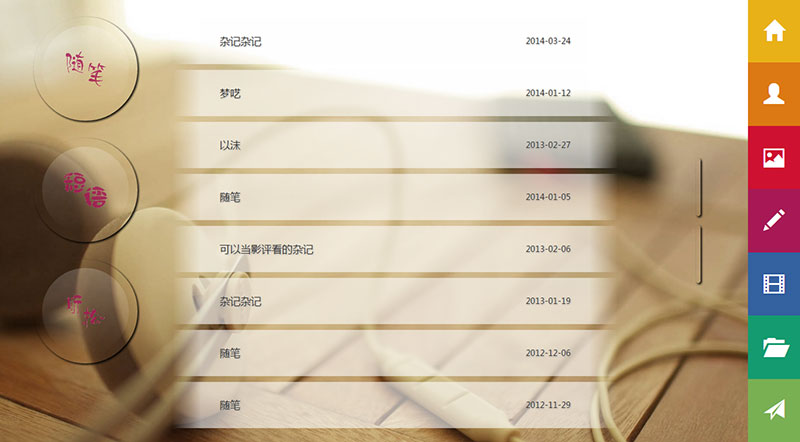

做一个略调皮的个人主页--相册与随笔篇

总算在北京找到个便宜的房子租了，算是稳定下来啦。
新工作的节奏本来很快，有些不适用的，后来UI的方案被老大给毙了，我就又无所事事了···
多谢帮我加目录的人，虽然我现在都不知道是谁=。=
至于ie8兼容性，其实就是opacity这个属性的问题，其余ie8都应该没问题。这儿就不改啦。
这一篇主要主要说的是css3的效果，以我的相册和我的随笔为例。
相册是有三种展开模式，分别是相册模式，照片墙模式以及手风琴模式。具体的形成就不说了，只说一下相册的hover事件还有展开效果。
<div class="photo_area" >
<div class="photo_box3" data-type="mark">
<div class="photo_content tc"><img src="./images/mark.png"><aside>书签夹</aside></div>
</div>
<div class="photo_box2" data-type="wall">
<div class="photo_content tc"><img src="./images/wall.png"><aside>照片墙</aside></div>
</div>
<div class="photo_box" data-type="normal">
<div class="photo_content tc"><img src="./images/photos/Nature/index.jpg"><aside>风景</aside></div>
</div>
</div>
这是一个相册的html代码，一个area里面有三个box，分别就是展开的三张，然后我们添加css3的动画效果。
首先是，当鼠标移动到area上的时候，三个box的旋转。
.photo_area{
width:164px;height:212px;position:relative;margin:0 40px 50px;float:left;cursor:pointer;
.photo_box{
width:100%;height:100%;z-index:1;position:absolute;top:0px;left:0px;background:#FFF;
.getBoxShdow(1px 1px 3px #333);
.getTransformOrgin(0% 100%);
.geTtransition(all @animateTime*2 ease);
}
}
.photo_area:hover{
.photo_box{
.getTransform(rotate(-9deg));
}
.photo_box2{
.getTransform(rotate(-2deg));
}
.photo_box3 {
.getTransform(rotate(5deg));
}
}
注意一下，正常的rotate都是以中心为中心的（有点绕口···），我们要的效果时以右下角为中心，所以需要加上 transform-orgin的属性。
然后是 area的hover 下，三个box的反应。
之后是box的hover时间，当box hover的时候，他要到最上方，覆盖掉其余两个，所以还有一下代码：
.photo_box2:hover,.photo_box3:hover{
z-index:2;
}
这样大体的鼠标hover的效果就好了。然后是点击后的效果。
点击后飘的那个效果可拆分为三个动作，分别是旋转，放大，定位。
旋转的话，旋转的话即旋转90度即可。
放大的话，只要获取窗口的宽和高然后做 一下处理即可。
定位的话，需要算出该area相对于窗口，定位是多少。用offset即可。然后将这个top以及left的值的负数给到点击的那个box上，css给area一个position：relative，这样让box相对于area定位，那么他的top以及left 变成了 area相对于窗口定位的负值，这个box就会定位到窗口的左上角。
这三个动作同时进行，就达到了我们预想的效果。
随笔的三个按钮式css做的，整个加了圆角和阴影，里面加一个半白色的梯度渐变，就是所呈现的效果啦。
.article_menu_btn{
width:180px;height:180px;overflow:hidden;cursor:pointer;position:absolute;top:0px;left:0px;
.getBorderRadius(90px);
.getBoxShdow(2px 2px 5px #000);
.geTtransition2(all @animateTime/2 ease, background @animateTime ease);
span{
width:150px;height:150px;margin:15px;display:block;
.getBorderRadius(75px);
.getGradient(top,rgba(255,255,255,.2), rgba(255,255,255,0));
}
span:after{
content:'';width:100%;height:100%;display:block;opacity:.8;
}
}
之后的文章的展开效果与相册类似，只不过没有旋转，就两个动作，定位，以及增加高度。
这样大体上的效果就呈现出来啦。